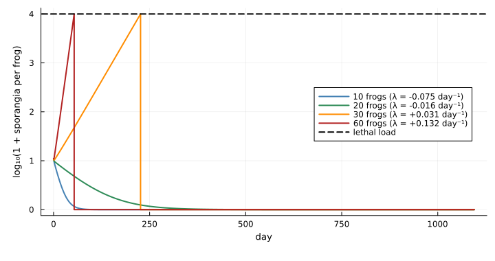
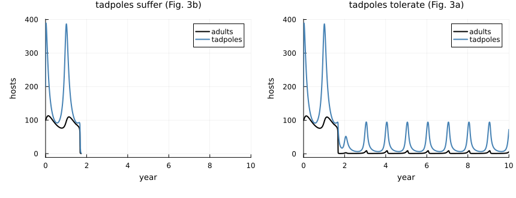
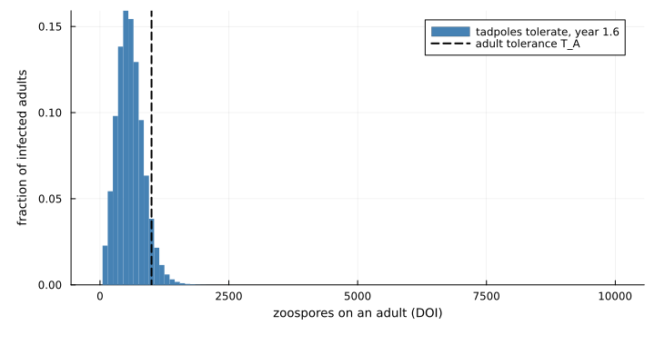
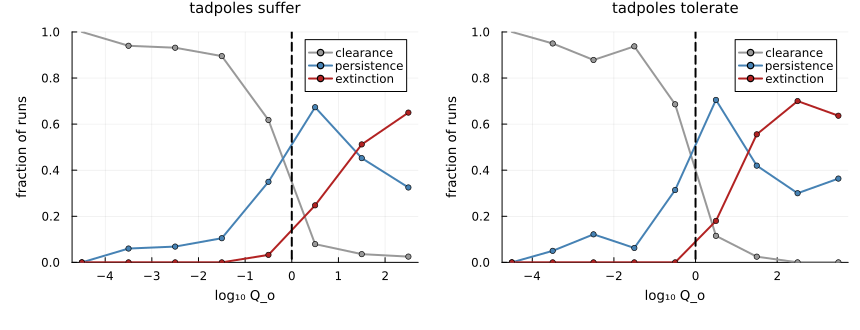
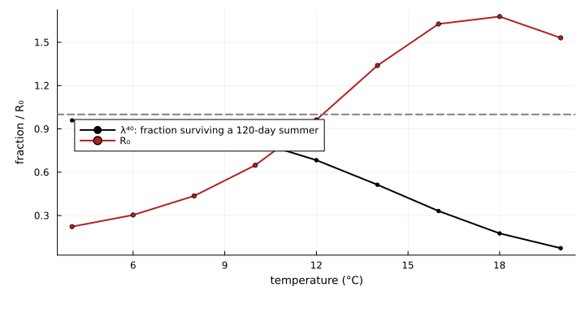
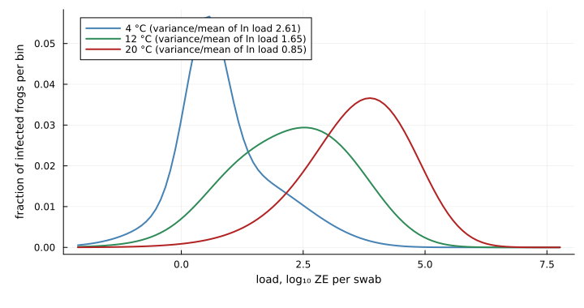
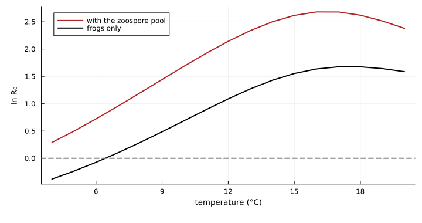
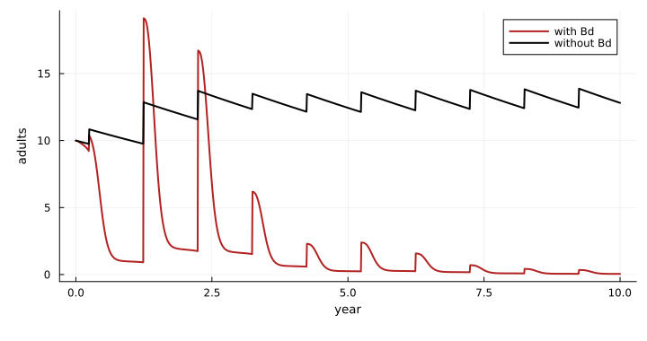
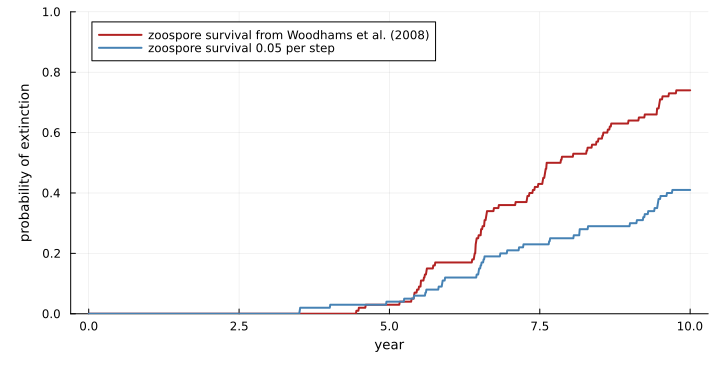
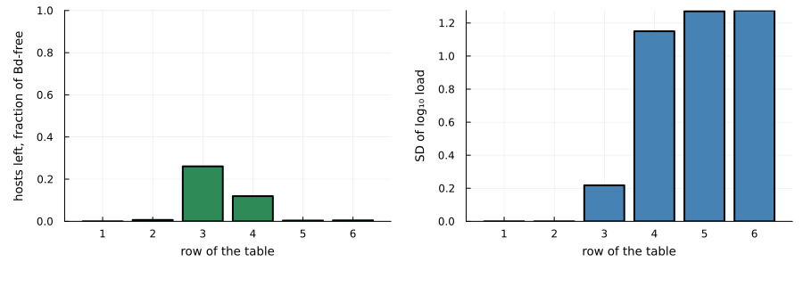

Does it matter that frogs carry different Bd loads?
- The question and the method
- Step 1. The mean load on identical frogs
- Step 2. A distribution of loads
- Step 3. Loads fitted to swabs
- Step 4. A zoospore pool, tadpoles and seasons
- Step 5. Whole frogs and chance
- All steps
- What the exercise shows
- Limits
- References
[!NOTE]
Models in this tutorial
Model Source Category API page Mean load and zoospore pool, BriggsLoadProblemBriggs et al. 2010 published api/briggs2010.mdLoad distribution, LoucaDOIProblemLouca et al. 2014 published api/louca2014.mdIntegral projection model, BdIPMProblemWilber et al. 2016 published api/wilber2016.mdHybrid IPM with a pool and tadpoles, HybridIPMProblemWilber et al. 2017 published api/wilber2017.mdCategories: published models reimplement a paper’s equations and are checked against it; modified models add structure to a published model; new models are new structure. Results from modified and new models are not published results.
The question and the method
Chytridiomycosis is a disease of load: a frog dies when the fungus on its skin passes a threshold, and a frog with few zoospores may never be harmed. Models of Bd in frogs have represented load with increasing detail. The first follow the load on each frog with every frog alike; later ones follow how loads are distributed across frogs and fit that distribution to swab data. This vignette climbs that ladder in four published models of Bd in yellow-legged frogs and other frogs, and asks what each added piece of biology changes.
At every step it reports the same three outcomes:
- invasion number: the model’s own threshold quantity for Bd invading a healthy population, scaled so that Bd invades when it exceeds 1 (a ratio to the threshold host number, a reproduction quotient, or R₀);
- hosts left: the hosts alive at the end of the run, as a fraction of the population without Bd;
- spread of load: the standard deviation of log₁₀ load among infected hosts. The units of load differ between models (sporangia, zoospores on a host, zoospore equivalents per swab), but a standard deviation on the log scale is the same whatever the units, so this outcome compares like with like.
| Step | Model | Piece of biology added |
|---|---|---|
| 1 | Briggs et al. (2010) | the mean load on identical frogs, a shared zoospore pool |
| 2 | Louca et al. (2014) | the distribution of load; within-host growth to a ceiling; death graded by load; tadpoles |
| 3 | Wilber et al. (2016) | loads fitted to swabs of real frogs; loss of infection; temperature |
| 4 | Wilber et al. (2017) | a zoospore pool, tadpoles and seasons on top of the fitted IPM |
| 5 | Wilber et al. (2017) | demographic stochasticity: whole frogs and zoospores |
[!IMPORTANT]
The models are reference implementations of the published models, with parameters read from the package’s compendium. Published values quoted for comparison come from the package’s validation registry, with their status (reproduced, qualitative or discrepant). The outcomes of the ladder are our calculations with the published models, and the stochastic runs use fewer replicates than the papers. Each model has its own parameter set and host population, so a change between steps mixes the new biology with new parameters.
using Chytridiomycosis, Plots, Printf
using Random: Xoshiro
default(linewidth = 2, size = (720, 380), legendfontsize = 8, guidefontsize = 9,
titlefontsize = 10, left_margin = 4Plots.mm, bottom_margin = 4Plots.mm)
ladder = NamedTuple[]
function step!(n, model, invasion, left, spread, note)
push!(ladder, (; n, model, invasion, left, spread, note))
return (invasion = round(invasion, digits = 3), hosts_left = round(left, digits = 3),
sd_log10_load = round(spread, digits = 3))
end
# Standard deviation of log₁₀ load for counts `w` of hosts at loads `x` (natural scale, > 0)
function sd_log10(x, w)
W = sum(w)
W > 0 || return NaN
m = sum(w .* log10.(x)) / W
return sqrt(max(sum(w .* (log10.(x) .- m) .^ 2) / W, 0.0))
end
function registry(id)
t = validation_target(id)
return (; published = t.published, status = t.status,
ours = t.regression === nothing ? nothing : t.regression["value"])
end
nothingStep 1. The mean load on identical frogs
Briggs et al. (2010) follow the number of sporangia $S_i$ on each frog and the zoospores $Z$ in a shared pool of volume $V$ (time in days):
\[\frac{dS_i}{dt} = \frac{\nu\gamma}{V} Z + \nu\eta f S_i - \sigma S_i, \qquad \frac{dZ}{dt} = \eta(1 - f)\sum_i S_i - \frac{\gamma}{V} N Z - \mu Z,\]
and a frog dies when its load reaches $S_{\max} = 10^4$ sporangia. Started from the same load, every frog has the same load at all times, so the model is about the mean load. Loads grow when the number of frogs $N$ exceeds a threshold $N^\ast$; $N/N^\ast$ is the invasion number. With the parameters of their Fig. 2C:
bp = BriggsParameters(:briggs2010)
Nstar = host_density_threshold(bp)
r = registry("briggs2010_density_threshold")
@printf("N* = %.2f frogs per pool (paper: about %g; %s)\n", Nstar, r.published, r.status)
runs1 = Dict(N => solve(BriggsLoadProblem(bp; N, S0 = fill(10.0, N), tspan = (0.0, 1095.0));
saveat = 1.0, abstol = 1e-8, reltol = 1e-8) for N in (10, 20, 30, 60))
plot(xlabel = "day", ylabel = "log₁₀(1 + sporangia per frog)", legend = :right)
for (N, c) in ((10, :steelblue), (20, :seagreen), (30, :darkorange), (60, :firebrick))
s = runs1[N].sol
plot!(s.t, log10.(1 .+ max.(getindex.(s.u, 1), 0.0)); color = c,
label = @sprintf("%d frogs (λ = %+.3f day⁻¹)", N, load_growth_rate(bp, N)))
end
hline!([log10(1 + bp.Smax)]; color = :black, linestyle = :dash, label = "lethal load")N* = 23.15 frogs per pool (paper: about 20; reproduced)
Below $N^\ast$ every frog clears its infection; above it every frog dies, sooner at higher density (briggs2010_fig2_clearance, briggs2010_fig2_dieoff, qualitative). At 30 frogs:
r30 = runs1[30]
step!(1, "mean load (Briggs 2010), 30 frogs", 30 / Nstar, count(r30.alive) / 30, 0.0,
"all or nothing: every frog dies on the same day")(invasion = 1.296, hosts_left = 0.0, sd_log10_load = 0.0)Every frog carries the same load, so the spread of load is zero. This is the extreme that the next steps relax.
Step 2. A distribution of loads
Louca et al. (2014) follow the number of hosts $P_s(n)$ of each stage (adults A, tadpoles T) with each degree of infection (DOI) $n$, the number of zoospores on the host. A zoospore from the pool raises a host’s DOI by one, at rate $\beta_s Z$; within the host, the DOI rises and falls one zoospore at a time, so hosts with the same history drift apart. Three further pieces of biology come with it:
- within-host growth to a ceiling. Infections grow at rate $\lambda$ while small and level off at a capacity $K_S = 4\lambda(\lambda + \mu_S)/\mu_S^2$, instead of growing exponentially to death;
- death graded by load. Mortality rises with DOI and halves yearly survival at a tolerance $T_s$; death is certain only at the lethal DOI $F = 10^4$;
- tadpoles and breeding. A breeding pulse each year, tadpoles that metamorphose, and density dependence that holds the disease-free population at $(K_A, K_T)$.
The invasion number is the reproduction quotient $Q_o$: the zoospores released into the water that descend from one free zoospore, $Q_o = \mu_Z^{-1}\sum_s \eta_s\beta_s N_s/(R_s - \lambda_s)$. Bd invades when $Q_o > 1$ (louca2014_Qo_invasion, qualitative). The paper’s Fig. 3 contrasts tadpoles that suffer from infection with tadpoles that tolerate it (time in days, run for ten years, one infected adult introduced after 1.5 years):
Y = 365
lp = Dict(set => LoucaParameters(:louca2014; set) for set in ("fig3a", "fig3b"))
ls = Dict(set => solve(LoucaDOIProblem(lp[set]; save_distributions = true)) for set in ("fig3a", "fig3b"))
for (set, label) in (("fig3b", "tadpoles suffer"), ("fig3a", "tadpoles tolerate"))
q, s = lp[set], ls[set]
@printf("%-18s Q_o = %.1f; outcome %s after %.1f years; adults %.1f of K_A = %g\n", label,
reproduction_quotient(q), s.outcome, s.t_end / Y, s.NA[end], q.KA)
end
plot(layout = (1, 2), size = (860, 330))
for (i, (set, label)) in enumerate((("fig3b", "tadpoles suffer (Fig. 3b)"), ("fig3a", "tadpoles tolerate (Fig. 3a)")))
s = ls[set]
plot!(s.t ./ Y, s.NA; subplot = i, label = "adults", color = :black, title = label,
xlabel = "year", ylabel = "hosts", xlims = (0, 10))
plot!(s.t ./ Y, s.NT; subplot = i, label = "tadpoles", color = :steelblue)
end
plot!()tadpoles suffer Q_o = 39.4; outcome extinction after 1.7 years; adults 0.4 of K_A = 100
tadpoles tolerate Q_o = 39.4; outcome persistence after 10.0 years; adults 5.8 of K_A = 100
With suffering tadpoles the population is extinct within two years (louca2014_fig3b_extinction); with tolerant tadpoles it survives at a fraction of its size (louca2014_fig3a_rescue; both qualitative). Tolerant tadpoles are a reservoir that keeps Bd going while adults recover between outbreaks.
The adults’ loads are now spread out. Bins are 100 zoospores wide, and the first bin holds the uninfected, so the spread among light infections is not resolved:
s, q = ls["fig3a"], lp["fig3a"]
doi = s.doi.adult
kmax = argmax(vec(sum(s.PA_t[2:end, :]; dims = 1))) # time with most infected adults
w = s.PA_t[2:end, kmax]
bar(doi[2:end], w ./ sum(w); bar_width = doi[2] - doi[1], linewidth = 0, color = :steelblue,
xlabel = "zoospores on an adult (DOI)", ylabel = "fraction of infected adults",
label = @sprintf("tadpoles tolerate, year %.1f", s.t[kmax] / Y))
vline!([q.TA]; color = :black, linestyle = :dash, label = "adult tolerance T_A")
spreadA = sd_log10(doi[2:end], w)
leftA = (s.NA[end] + s.NT[end]) / (q.KA + q.KT)
leftB = (ls["fig3b"].NA[end] + ls["fig3b"].NT[end]) / (q.KA + q.KT)
@printf("hosts left after 10 years: %.3f (tolerate), %.3f (suffer); sd of log₁₀ DOI %.2f\n",
leftA, leftB, spreadA)
step!(2, "load distribution (Louca 2014), tadpoles suffer", reproduction_quotient(lp["fig3b"]), leftB, NaN,
"extinct within two years")
step!(2, "load distribution (Louca 2014), tadpoles tolerate", reproduction_quotient(q), leftA, spreadA,
"hosts persist at a fraction of K with Bd")hosts left after 10 years: 0.261 (tolerate), 0.007 (suffer); sd of log₁₀ DOI 0.22
(invasion = 39.42, hosts_left = 0.261, sd_log10_load = 0.218)Louca et al. also sampled 10⁴ parameter sets per scenario and asked which parameters raise the risk of host extinction. The package repeated this with 2000 sets per scenario (scripts/louca2014_montecarlo.jl; our runs, stored in data/louca2014/). Without an environmental reservoir, the outcome follows $Q_o$:
mc = load_louca2014()
plot(layout = (1, 2), size = (860, 330))
for (i, (k, label)) in enumerate((("suffer_noreservoir", "tadpoles suffer"), ("tolerate_noreservoir", "tadpoles tolerate")))
b = mc[k]["Qo_bins"]
e = b["log10_edges"]
keep = [j for j in eachindex(b["n"]) if b["n"][j] >= 10]
c = [(e[j] + e[j + 1]) / 2 for j in keep]
for (o, col) in (("clearance", :gray60), ("persistence", :steelblue), ("extinction", :firebrick))
plot!(c, b[o][keep]; subplot = i, label = o, color = col, marker = :circle, ms = 3,
xlabel = "log₁₀ Q_o", ylabel = "fraction of runs", title = label, ylim = (0, 1))
end
vline!([0.0]; subplot = i, color = :black, linestyle = :dash, label = "")
end
plot!()
Bd is cleared when $Q_o$ is well below 1, persists most often near $Q_o = 1$, and kills its hosts when $Q_o$ is large (louca2014_fig5_Qo_outcomes, qualitative). The overall fraction of extinctions is lower than the paper’s:
t = validation_target("louca2014_extinction_fraction")
@printf("extinctions with no reservoir (suffer, tolerate): paper %s, ours %s (%s)\n",
string(t.published), string(check_target(t).value), t.status)extinctions with no reservoir (suffer, tolerate): paper [0.25, 0.21], ours [0.2145, 0.1835] (discrepant)This, and the paper’s finding that host tolerance matters, are not reproduced; step size, the number of DOI bins and the reading of the sampling scales were ruled out, and the authors’ code was not deposited.
Step 3. Loads fitted to swabs
Wilber et al. (2016) replaced the mechanistic within-host model with an integral projection model (IPM) fitted to swabs of 20 adult Rana muscosa kept at 4, 12 and 20 °C. Load $x$ is the natural log of zoospore equivalents (ZE) per swab, and time steps are 3 days. Every vital rate is a regression on load and temperature $T$:
- survival $s(x)$ falls with load;
- the next load is normal with mean $b_{01} + b_{11}x + b_{21}T$, with $b_{11} \approx 0.8 < 1$, so loads are pulled towards a temperature-dependent level instead of growing without bound;
- frogs lose infection with a probability that depends on load and temperature;
- uninfected frogs are infected from the environment with probability $\varphi(T)$.
Without births, the dominant eigenvalue $\lambda$ of the projection matrix is the long-run survival per step; $\lambda^{40}$ is the fraction surviving a 120-day summer. R₀ uses the authors’ density-dependent transmission among 100 frogs.
wp = WilberParameters(:wilber2016; set = "deposited")
mesh50 = IPMMesh(:wilber2016; n = 50)
Ts = 4:2:20
λs = [population_growth_rate(wp; temperature = T) for T in Ts]
R0s = [basic_reproduction_number(wp; temperature = T, mesh = mesh50) for T in Ts]
plot(Ts, λs .^ 40; label = "λ⁴⁰: fraction surviving a 120-day summer", color = :black,
xlabel = "temperature (°C)", ylabel = "fraction / R₀", legend = :left, marker = :circle, ms = 3)
plot!(Ts, R0s; label = "R₀", color = :firebrick, marker = :circle, ms = 3)
hline!([1.0]; color = :gray, linestyle = :dash, label = "")
for (id, v) in (("wilber2016_lambda_20C_deposit", λs[end]), ("wilber2016_R0_peak", maximum(R0s)),
("wilber2016_R0_threshold", check_target(validation_target("wilber2016_R0_threshold")).value),
("wilber2016_vm_ratio_4C", stable_load_distribution(wp; temperature = 4).vm_ratio))
t = validation_target(id)
@printf("- `%s`: %s. Paper %g, ours %.4g (%s).\n", id, t.quantity, t.published, v, t.status)
endwilber2016_lambda_20C_deposit: λ per 3-day step at 20 °C, deposited coefficients, 100 bins. Paper 0.9369, ours 0.9369 (reproduced).wilber2016_R0_peak: largest full-IPM R0 over 4–20 °C (at 17 °C). Paper 1.6844, ours 1.678 (reproduced).wilber2016_R0_threshold: temperature (°C) at which the full-IPM R0 crosses 1, β = 9.82e-4, 100 frogs, 50 bins. Paper 12.2, ours 12.21 (reproduced).wilber2016_vm_ratio_4C: variance-to-mean ratio of ln load in the stable distribution at 4 °C. Paper 2.6149, ours 2.615 (reproduced).
(The peak above is over even temperatures; over every degree it is at 17 °C.) Warmth helps Bd: frogs barely decline at 4 °C, where loads stay low and infections are often lost, and lose more than 90% of their number over a summer at 20 °C. The stable load distribution narrows as temperature rises:
plot(xlabel = "load, log₁₀ ZE per swab", ylabel = "fraction of infected frogs per bin", legend = :topleft)
for (T, c) in ((4, :steelblue), (12, :seagreen), (20, :firebrick))
d = stable_load_distribution(wp; temperature = T)
plot!(d.x ./ log(10), d.probability; color = c, label = @sprintf("%d °C (variance/mean of ln load %.2f)", T, d.vm_ratio))
end
plot!()
At 20 °C, 100 uninfected frogs exposed for a 120-day summer (the paper’s simulation):
sol3 = solve(BdIPMProblem(wp; temperature = 20))
left3 = (sol3.S[end] + sum(sol3.I[:, end])) / sol3.S[1]
d20 = stable_load_distribution(wp; temperature = 20)
spread3 = sqrt(d20.variance) / log(10)
@printf("frogs left after 120 days: %.2f; sd of log₁₀ load in the stable distribution %.2f\n", left3, spread3)
step!(3, "fitted IPM (Wilber 2016), 20 °C", R0s[end], left3, spread3,
"a gradual decline over a summer instead of a collapse")frogs left after 120 days: 0.12; sd of log₁₀ load in the stable distribution 1.15
(invasion = 1.531, hosts_left = 0.12, sd_log10_load = 1.15)The paper’s statement that a 120-day summer at 18 °C brings an 80% decline with probability about one half needs a 1000-draw bootstrap and is not repeated here; the registry has it (wilber2016_decline_18C, qualitative, ours 0.50).
Step 4. A zoospore pool, tadpoles and seasons
Wilber et al. (2017) put the fitted IPM of adults inside a model of a whole population:
- a zoospore pool fed by infected adults ($e^x$ zoospores per step) and by tadpoles, with zoospore survival from Woodhams et al. (2008); uninfected adults are infected with a probability that rises with the pool (density-dependent transmission, Table 2);
- three tadpole stages, all infected and shedding, metamorphosing into uninfected adults;
- seasons: water temperature cycles between 4 and 20 °C, and adults breed once a year with density-dependent (Ricker) recruitment.
The parameters are the Bayesian posterior means the authors simulated with (set = "coded"). The invasion number is R₀ for 4 susceptible adults per m³ at a constant temperature, with and without the pool:
w7 = Wilber2017Parameters(:wilber2017; set = "coded", transmission = :zpool_dd)
T7 = 4:1:20
R07 = [basic_reproduction_number(w7; temperature = T, S = 4) for T in T7]
plot(T7, log.(getfield.(R07, :total)); label = "with the zoospore pool", color = :firebrick,
xlabel = "temperature (°C)", ylabel = "ln R₀", legend = :topleft)
plot!(T7, log.(getfield.(R07, :host)); label = "frogs only", color = :black)
hline!([0.0]; color = :gray, linestyle = :dash, label = "")
for (id, T, kind) in (("wilber2017_fig2c_total_4C", 4, :total), ("wilber2017_fig2c_host_20C", 20, :host))
t = validation_target(id)
v = log(getfield(basic_reproduction_number(w7; temperature = T, S = 4), kind))
@printf("- `%s`: %s. Paper %g; ours at the posterior means %.3f (%s; the paper plots the median over posterior draws, which the registry reproduces).\n",
id, t.quantity, t.published, v, t.status)
endwilber2017_fig2c_total_4C: ln R0 with the zoospore pool at 4 °C. Paper 0.291; ours at the posterior means 0.290 (reproduced; the paper plots the median over posterior draws, which the registry reproduces).wilber2017_fig2c_host_20C: ln R0 without the zoospore pool at 20 °C. Paper 1.478; ours at the posterior means 1.586 (reproduced; the paper plots the median over posterior draws, which the registry reproduces).
The pool roughly doubles ln R₀: zoospores that survive in the water infect frogs long after they were shed. The ladder records R₀ at 20 °C, the summer maximum. A deterministic run of ten years, against the same population without Bd (tadpoles that shed nothing):
det7 = hybrid_summary(solve(HybridIPMProblem(w7; years = 10, stochastic = false)))
w7free = Wilber2017Parameters(:wilber2017; set = "coded", transmission = :zpool_dd, μT = 0.0)
free7 = hybrid_summary(solve(HybridIPMProblem(w7free; years = 10, stochastic = false)))
plot(det7.years, det7.adults; label = "with Bd", color = :firebrick, xlabel = "year", ylabel = "adults")
plot!(free7.years, free7.adults; label = "without Bd", color = :black)
mesh7 = IPMMesh(:wilber2017)
x7 = meshpoints(mesh7)
function load_spread(u) # sd of log₁₀ load among infected adults in state u
n = u[5:(4 + mesh7.n)]
return sd_log10(exp.(x7), max.(n, 0.0))
end
sol7 = solve(HybridIPMProblem(w7; years = 10, stochastic = false))
kinf = argmax(vec(sum(sol7.u[5:(4 + mesh7.n), :]; dims = 1)))
left4 = det7.adults[end] / free7.adults[end]
@printf("adults after 10 years: %.2f with Bd, %.2f without (ratio %.2f)\n", det7.adults[end], free7.adults[end], left4)
step!(4, "+ pool, tadpoles, seasons (Wilber 2017), R₀ at 20 °C", R07[end].total, left4, load_spread(sol7.u[:, kinf]),
"each summer's outbreak kills most adults; recruits fail to rebuild")adults after 10 years: 0.05 with Bd, 12.81 without (ratio 0.00)
(invasion = 10.802, hosts_left = 0.004, sd_log10_load = 1.271)Each spring, metamorphs join the adults; each summer, as the water warms, the pool fills and most adults die. Infected tadpoles keep the pool supplied through the winter, so Bd never fades, and within ten years the adults have dwindled to a twentieth of a frog. A continuous model never reaches zero, so it cannot say when, or whether, the population is lost.
Step 5. Whole frogs and chance
The last piece is demographic stochasticity: every frog survives, grows its load, loses its infection or dies by a random draw, and tadpoles and zoospores are whole numbers (Wilber et al. 2017, Appendix S4). A population of about a dozen adults can then go extinct. Here 100 runs of ten years each:
function hybrid_runs(p; n = 100, seed = 1)
rng = Xoshiro(seed)
return [solve(HybridIPMProblem(p; years = 10); rng) for _ in 1:n]
end
runs = hybrid_runs(w7)
summ = [hybrid_summary(s) for s in runs]
yrs = summ[1].years
pext = [count(s -> s.extinct[k], summ) / length(summ) for k in eachindex(yrs)]
high = Wilber2017Parameters(:wilber2017; set = "coded", transmission = :zpool_dd,
ν = parameter_set(:wilber2017).zsurv_high)
summ_h = [hybrid_summary(s) for s in hybrid_runs(high; seed = 2)]
pext_h = [count(s -> s.extinct[k], summ_h) / length(summ_h) for k in eachindex(yrs)]
plot(yrs, pext; label = "zoospore survival from Woodhams et al. (2008)", color = :firebrick,
xlabel = "year", ylabel = "probability of extinction", legend = :topleft, ylim = (0, 1))
plot!(yrs, pext_h; label = "zoospore survival 0.05 per step", color = :steelblue)
for (id, v) in (("wilber2017_extinction_10yr_dd", pext[end]), ("wilber2017_extinction_10yr_high_decay", pext_h[end]))
t = validation_target(id)
@printf("- `%s`: %s. Paper %g, ours %.2f from 100 runs (%s with 500 runs in the registry).\n",
id, t.quantity, t.published, v, t.status)
endwilber2017_extinction_10yr_dd: extinction probability by year 10, density-dependent transmission with a dynamic pool. Paper 0.742, ours 0.74 from 100 runs (reproduced with 500 runs in the registry).wilber2017_extinction_10yr_high_decay: extinction probability by year 10 with zoospore survival fixed at 0.05 per step, density-dependent transmission. Paper 0.432, ours 0.41 from 100 runs (reproduced with 500 runs in the registry).
left5 = sum(s.adults[end] for s in summ) / length(summ) / free7.adults[end]
# pooled load distribution at the time of most infected adults in the deterministic run
pooled = sum(max.(r.u[5:(4 + mesh7.n), kinf], 0.0) for r in runs)
spread5 = sd_log10(exp.(x7), pooled)
byyear(y) = pext[findlast(<=(y), yrs)]
@printf("extinct by year 5: %.2f; by year 8: %.2f; by year 10: %.2f\n", byyear(5), byyear(8), pext[end])
@printf("mean adults at year 10, as a fraction of the Bd-free population: %.3f\n", left5)
step!(5, "+ demographic stochasticity (Wilber 2017), R₀ at 20 °C", R07[end].total, left5, spread5,
"three quarters of populations extinct within 10 years")extinct by year 5: 0.03; by year 8: 0.52; by year 10: 0.74
mean adults at year 10, as a fraction of the Bd-free population: 0.005
(invasion = 10.802, hosts_left = 0.005, sd_log10_load = 1.276)With whole frogs, extinction is an event with a date. Few populations are lost in the first five years; by year ten three quarters are, and the rest hang on with a frog or two. Making zoospores die faster halves that risk: the pool, not contact between frogs, drives transmission. Wilber et al. go on to show that the extinction risk depends most on the growth slope $b_{11}$ (resistance), more than on transmission (wilber2017_sensitivity_b11, reproduced; not repeated here).
All steps
fmt(x) = isnan(x) ? "–" : @sprintf("%.3g", x)
println("| Step | Model | Invasion number | Hosts left | SD of log₁₀ load | What changed |")
println("|---|---|---|---|---|---|")
for r in ladder
println("| ", r.n, " | ", r.model, " | ", fmt(r.invasion), " | ", fmt(r.left), " | ", fmt(r.spread), " | ", r.note, " |")
end| Step | Model | Invasion number | Hosts left | SD of log₁₀ load | What changed |
|---|---|---|---|---|---|
| 1 | mean load (Briggs 2010), 30 frogs | 1.3 | 0 | 0 | all or nothing: every frog dies on the same day |
| 2 | load distribution (Louca 2014), tadpoles suffer | 39.4 | 0.00665 | – | extinct within two years |
| 2 | load distribution (Louca 2014), tadpoles tolerate | 39.4 | 0.261 | 0.218 | hosts persist at a fraction of K with Bd |
| 3 | fitted IPM (Wilber 2016), 20 °C | 1.53 | 0.12 | 1.15 | a gradual decline over a summer instead of a collapse |
| 4 | + pool, tadpoles, seasons (Wilber 2017), R₀ at 20 °C | 10.8 | 0.00383 | 1.27 | each summer’s outbreak kills most adults; recruits fail to rebuild |
| 5 | + demographic stochasticity (Wilber 2017), R₀ at 20 °C | 10.8 | 0.00468 | 1.28 | three quarters of populations extinct within 10 years |
k = length(ladder)
lab = ["$(r.n). $(first(split(r.model, " (")))" for r in ladder]
plot(layout = (1, 2), size = (900, 340), bottom_margin = 10Plots.mm)
bar!([r.left for r in ladder]; subplot = 1, xticks = (1:k, string.(1:k)), legend = false,
ylabel = "hosts left, fraction of Bd-free", xlabel = "row of the table", color = :seagreen, ylim = (0, 1))
bar!([isnan(r.spread) ? 0.0 : r.spread for r in ladder]; subplot = 2, xticks = (1:k, string.(1:k)),
legend = false, ylabel = "SD of log₁₀ load", xlabel = "row of the table", color = :steelblue)
The rows are numbered as in the table (step 2 has two rows, for suffering and tolerant tadpoles).
What the exercise shows
- A distribution of loads turns all-or-nothing outcomes into partial ones. With the mean load, every frog dies or every frog clears. Once frogs differ in load and death is graded by load, some frogs carry Bd for a long time, and populations can persist with it (Louca’s tolerant tadpoles) or decline gradually over a summer (Wilber 2016).
- Where the loads come from matters more than how finely they are resolved. Louca’s mechanistic DOI model and Wilber’s fitted IPM both resolve the distribution, but the fitted growth slope below 1 holds loads near a temperature-dependent level, which makes temperature, not host density, the main driver of invasion (R₀ crosses 1 near 12 °C).
- Reservoirs keep Bd going. Tolerant tadpoles in Louca’s model and the zoospore pool and tadpoles of Wilber 2017 let Bd persist while adults decline; the pool roughly doubles ln R₀.
- Chance turns a decline into a date. The deterministic hybrid model lets adults dwindle towards zero without reaching it; with whole frogs, three quarters of the populations are extinct within ten years, and the rest are a frog or two from it.
Limits
- The models describe different frogs and units (sporangia, DOI zoospores, ZE per swab), with no published conversion between them; only the log-scale spread of load is comparable.
- Each step uses its own published parameter set; the steps compare models, not one model with pieces switched on.
- The stochastic step uses 100 runs (the paper 500), so its probabilities carry a sampling error of about ±0.05.
- The Louca et al. Monte Carlo study is shown from the package’s stored runs, and its extinction fractions and risk effects do not reproduce the paper’s.
References
- Briggs CJ, Knapp RA, Vredenburg VT (2010) Enzootic and epizootic dynamics of the chytrid fungal pathogen of amphibians. Proceedings of the National Academy of Sciences 107:9695–9700. doi:10.1073/pnas.0912886107
- Louca S, Lampo M, Doebeli M (2014) Assessing host extinction risk following exposure to Batrachochytrium dendrobatidis. Proceedings of the Royal Society B 281:20132783. doi:10.1098/rspb.2013.2783
- Wilber MQ, Langwig KE, Kilpatrick AM, McCallum HI, Briggs CJ (2016) Integral projection models for host–parasite systems with an application to amphibian chytrid fungus. Methods in Ecology and Evolution 7:1182–1194. doi:10.1111/2041-210X.12561
- Wilber MQ, Knapp RA, Toothman M, Briggs CJ (2017) Resistance, tolerance and environmental transmission dynamics determine host extinction risk in a load-dependent amphibian disease. Ecology Letters 20:1169–1181. doi:10.1111/ele.12814
- Woodhams DC, Alford RA, Briggs CJ, Johnson M, Rollins-Smith LA (2008) Life-history trade-offs influence disease in changing climates: strategies of an amphibian pathogen. Ecology 89:1627–1639. doi:10.1890/06-1842.1